Inicio Proyectos
Proyectos y acciones realizados por Comunes.
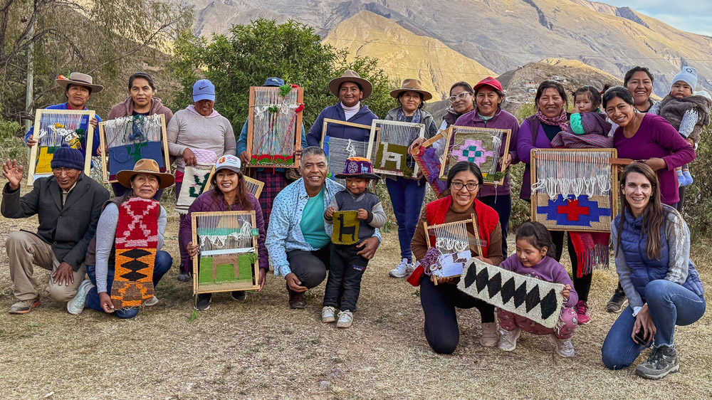
Desde 2022 acompañamos al colectivo indígena Warmis de Nazareno, integrado por mujeres del municipio de Nazareno (Salta).
Ver proyecto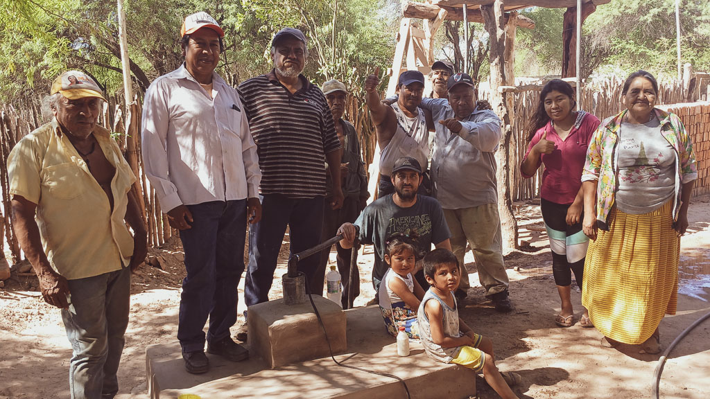
Proyecto de perforación de pozos de agua en comunidades del Chaco Salteño. En conjunto con Fundación Marita Solidaria (2025. Quebec, Canadá)
Ver proyecto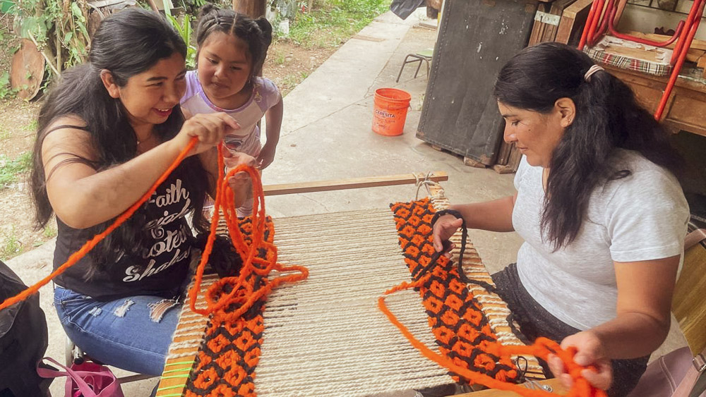
Durante 2024 y 2025 La Fundación Comunes acompañó el proceso organizativo de las mujeres tejedoras de la Comunidad Originaria Kolla Kondorwaira de Potrero de Castilla.
Ver proyecto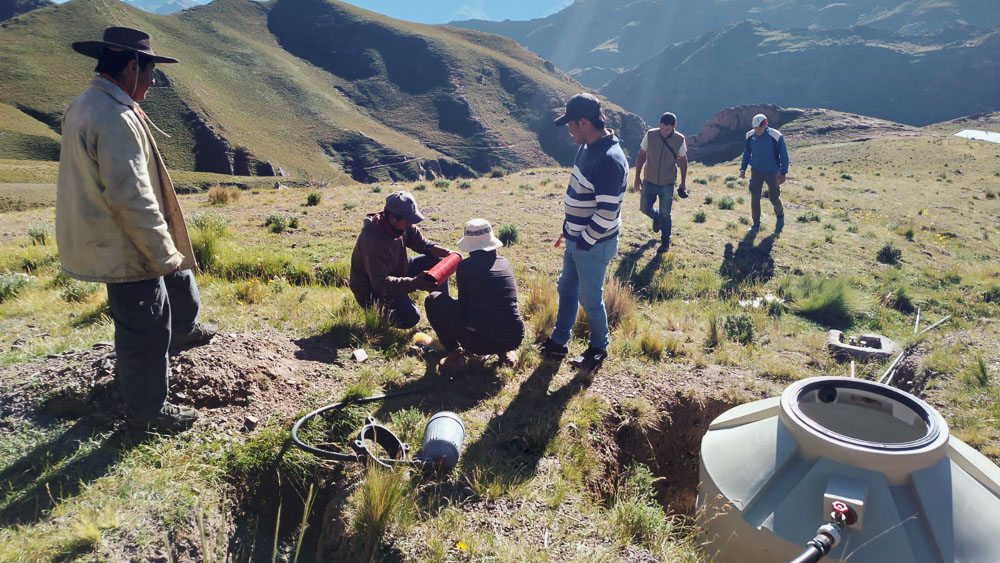
Línea de proyectos destinados a contribuir al Buen Vivir de las comunidades de la Quebrada del Toro (2022-2024)
Ver proyecto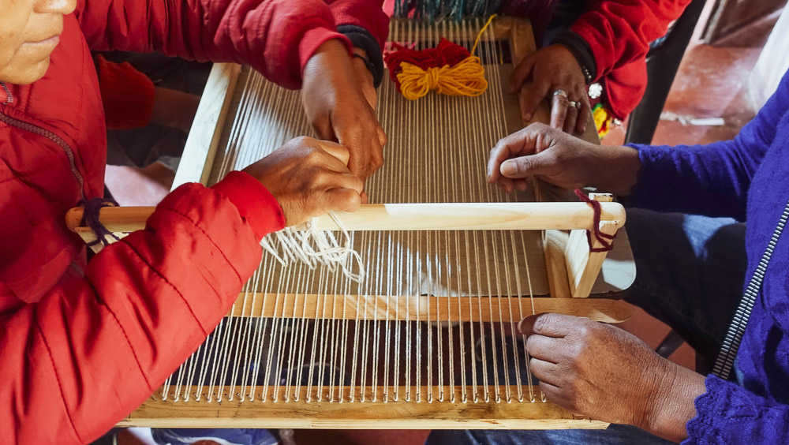
Línea de Proyectos “Warmis de Nazareno” (2022 – 2025). Financiado por el Fondo de Mujeres del Sur. En articulación con CONICET.
Ver proyecto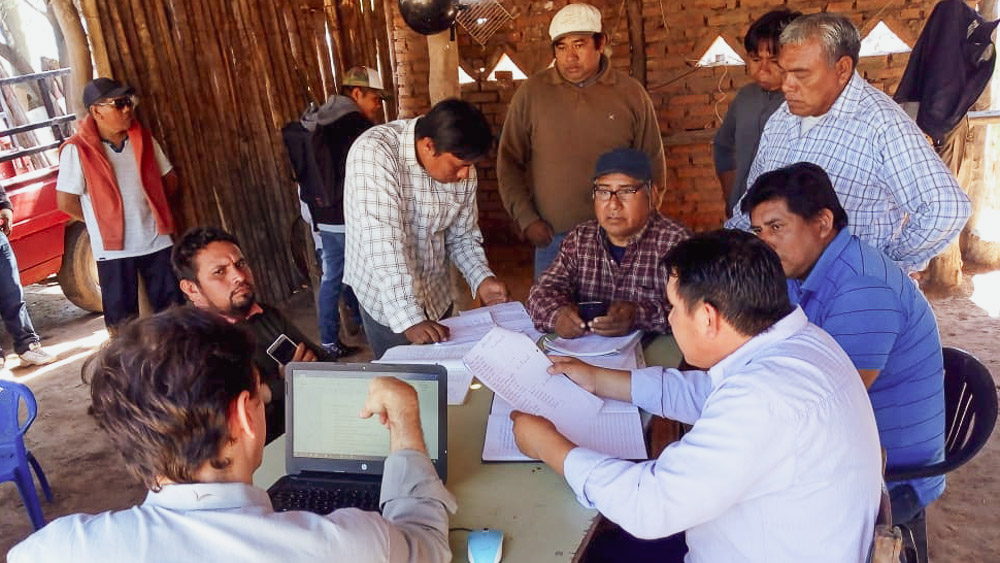
Iniciativa que busca revalorizar el patrimonio histórico y arqueológico del Gran Chaco, fortaleciendo el vínculo de las comunidades locales con su territorio y memoria colectiva.
Ver proyecto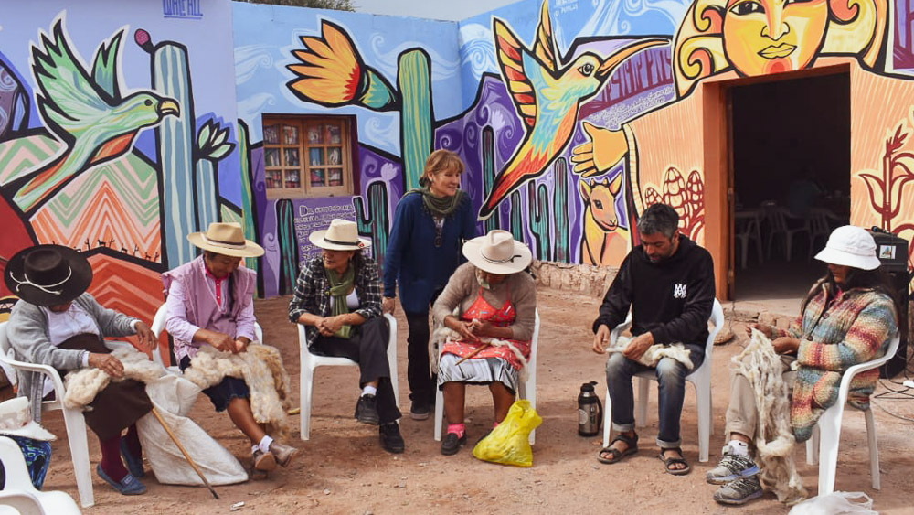
Acompañamiento de procesos organizativos de mujeres tejedoras en Cieneguillas - Jujuy y Amblayo - Salta. (2024-2025)
Ver proyecto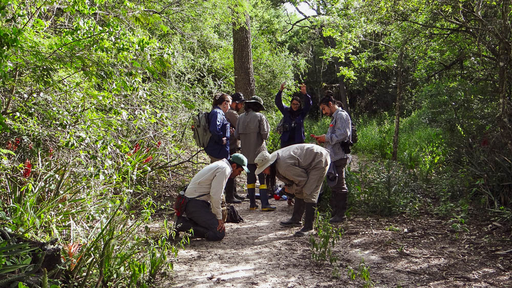
Creación de un espacio orientado a capacitar a estudiantes interesados en el estudio y la conservación de primates desde el trabajo colaborativo, académico y comprometido. (2023- 2025)
Ver proyecto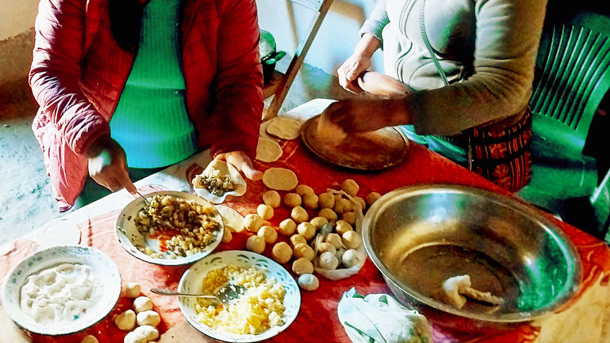
Investigación sobre cuidados y mujeres rurales en la Provincia de Salta. En conjunto con Asociación Civil Lola Mora y ONU Mujeres. (2023 – 2024)
Ver proyecto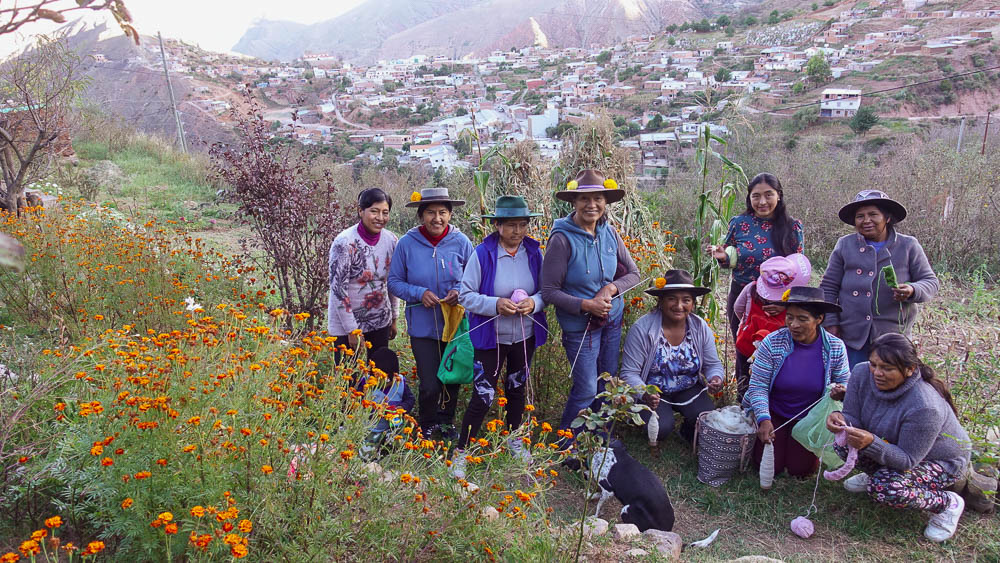
Línea de Proyectos “Warmis de Nazareno” (2022 – 2025). Financiado por el Fondo de Mujeres del Sur. En articulación con CONICET
Ver proyecto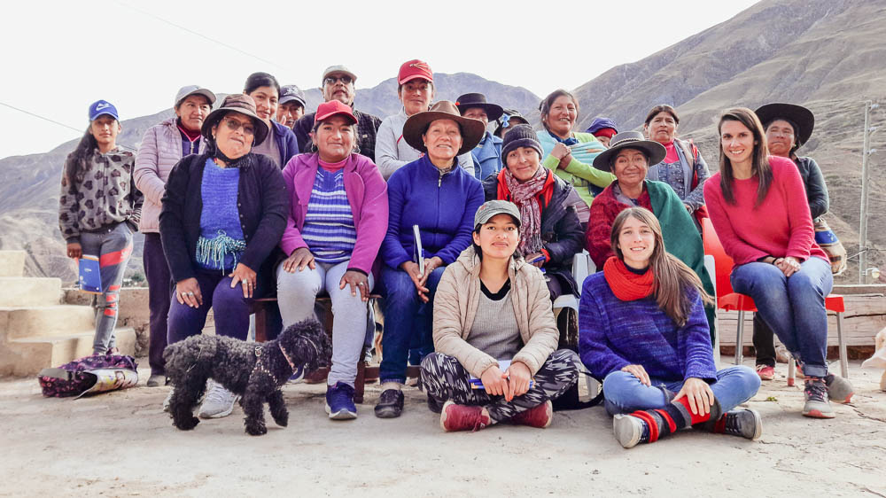
Línea de Proyectos “Warmis de Nazareno” (2022 – 2025). Financiado por el Fondo de Mujeres del Sur. En articulación con CONICET (ICSOH; IECET)
Ver proyectoLa Fundación desarrolla proyectos y acciones en torno a tres ejes principales:
● Gestión comunitaria y fortalecimiento organizativo: acompañamos a comunidades rurales, campesinas e indígenas en procesos de organización, producción y autonomía territorial.
● Educación, cultura y patrimonio biocultural: promovemos la valoración de los saberes locales a través de proyectos culturales y educativos.
● Ambiente y territorio: realizamos diagnósticos socioambientales, investigación participativa, acciones de cuidado y conservación ambiental.
Todos los proyectos de la Fundación Comunes comparten una perspectiva:
● Intercultural: respeto y diálogo entre saberes.
● De género: reconocimiento del rol de las mujeres en la sostenibilidad social y ambiental.
● De derechos: fortalecimiento de capacidades comunitarias para el ejercicio de derechos colectivos.
● Territorial: articulación con actores locales y enfoque situado en los ecosistemas y culturas.
Desde 2022 acompañamos al colectivo indígena Warmis de Nazareno, integrado por mujeres del municipio de Nazareno (Salta).
Durante 2024 y 2025 La Fundación Comunes acompañó el proceso organizativo de las mujeres tejedoras de la Comunidad Originaria Kolla Kondorwaira de Potrero de Castilla, fortaleciendo la recuperación de sus saberes y conocimientos textiles ancestrales. El trabajo puso en valor el conocimiento de las mujeres como patrimonio biocultural inmaterial y promovió la construcción de nuevas alternativas económicas desde una perspectiva comunitaria. Las acciones se desarrollaron en el marco de dos financiamientos: el primero, con el proyecto “Lanas y colores. Saberes textiles y patrimonio biocultural inmaterial de la comunidad Kondorwaira” (2025) que fue presentado en la 9.ª Convocatoria del Programa Puntos de Cultura del Ministerio de Cultura de la Nación; y el segundo, mediante el proyecto “Tejiendo Sueños. Consolidación del grupo Mujeres Tejedoras Kondorwaira” (2025), impulsado por la Secretaría de Coordinación Interministerial del Gobierno de Salta.
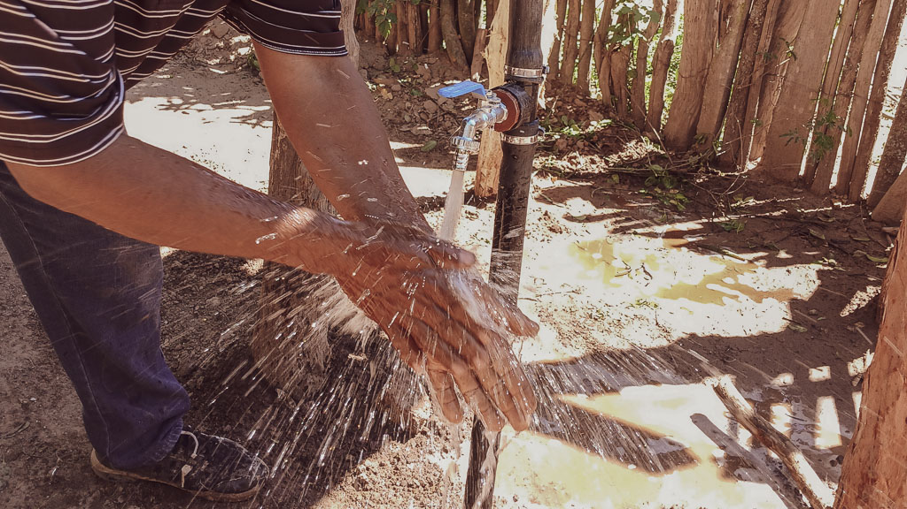
Proyecto de perforación de pozos de agua en comunidades del Chaco Salteño. En conjunto con Fundación Marita Solidaria (2025. Quebec, Canadá)
Mediante convenio con la Fundación Marita Solidaria (Quebec, Canadá), la Fundación Comunes desarrolla proyectos de perforación de pozos de agua en comunidades del Chaco salteño. El acuerdo establece asistencia técnica, coordinación territorial y ejecución de obras, en colaboración con los poceros comunitarios de la organización Wichí Universidad del Monte de Misión Chaqueña, Embarcación, Salta El proyecto busca garantizar el acceso al agua segura y fortalecer las capacidades locales de gestión de este recurso esencial.
Durante 2024 y 2025 La Fundación Comunes acompañó el proceso organizativo de las mujeres tejedoras de la Comunidad Originaria Kolla Kondorwaira de Potrero de Castilla, fortaleciendo la recuperación de sus saberes y conocimientos textiles ancestrales. El trabajo puso en valor el conocimiento de las mujeres como patrimonio biocultural inmaterial y promovió la construcción de nuevas alternativas económicas desde una perspectiva comunitaria. Las acciones se desarrollaron en el marco de dos financiamientos: el primero, con el proyecto “Lanas y colores. Saberes textiles y patrimonio biocultural inmaterial de la comunidad Kondorwaira” (2025) que fue presentado en la 9.ª Convocatoria del Programa Puntos de Cultura del Ministerio de Cultura de la Nación; y el segundo, mediante el proyecto “Tejiendo Sueños. Consolidación del grupo Mujeres Tejedoras Kondorwaira” (2025), impulsado por la Secretaría de Coordinación Interministerial del Gobierno de Salta.
Línea de proyectos destinados a contribuir al Buen Vivir de las comunidades de la Quebrada del Toro (2022-2024)
Durante los años 2022 al 2024 integrantes de Comunes participaron de diversos proyectos con el fin de contribuir al Buen Vivir de las comunidades de la Quebrada del Toro, particularmente en las localidades de Puesto Grande El Toro, Cerro Negro del Tirao y alrededores. Se ejecutaron 3 proyectos que promovieron el acceso y manejo sustentable del agua, el aprovechamiento de la energía solar y la mejora de los sistemas agrícolas y ganaderos locales, a partir del uso responsable de los recursos naturales disponibles y de la valorización de los saberes, conocimientos ancestrales y prácticas territoriales. El desarrollo de estas iniciativas, buscó desarrollar soluciones integrales y sostenibles orientadas a mejorar el hábitat rural y las condiciones de vida, fortaleciendo la soberanía hídrica, energética y productiva, desde un enfoque metodológico basado en la co-construcción de conocimientos a través del diálogo de saberes, la innovación tecnológica apropiada y el trabajo colaborativo con las comunidades, acompañando procesos territoriales priorizados por ellas mismas.
Línea de Proyectos “Warmis de Nazareno” (2022 – 2025). Financiado por el Fondo de Mujeres del Sur. En articulación con CONICET.
Puedes conocer más sobre el proyecto a través del siguiente podcast:
Click aquíIniciativa que busca revalorizar el patrimonio histórico y arqueológico del Gran Chaco, fortaleciendo el vínculo de las comunidades locales con su territorio y memoria colectiva. (2024 – En curso)
El Proyecto Mawu Pelaj tiene como objetivo la revalorización del patrimonio histórico y arqueológico de Gran Chaco. A través de la creación de un Centro de Interpretación de Historia y Arqueología, en Rivadavia Banda Sur, busca fortalecer el vínculo de las comunidades locales con su territorio y su memoria colectiva, promoviendo el reconocimiento de las identidades chaqueñas. La Fundación Comunes acompaña esta iniciativa mediante el asesoramiento técnico y la articulación institucional, aportando su experiencia en gestión territorial y comunitaria. El proyecto impulsa un espacio educativo y cultural abierto a la comunidad, orientado a la difusión del conocimiento histórico, la valorización de los saberes locales y el diálogo intercultural entre ciencia y comunidad. Ejes de trabajo: patrimonio biocultural, educación popular, identidad territorial y fortalecimiento comunitario.
Acompañamiento de procesos organizativos de mujeres tejedoras en Cieneguillas - Jujuy y Amblayo - Salta. (2024-2025)
La Fundación Comunes acompañó los procesos organizativos de mujeres tejedoras en Cieneguillas (Jujuy) y en Amblayo (Salta), articulando acciones con el Centro Vecinal La Junta a través de instancias de formación y fortalecimiento del trabajo textil. En Cieneguillas, promovió la creación de la marca colectiva “Kippus” tejidos de fibra de llama de Cieneguillas, Jujuy y consolidó estrategias de comercialización con identidad territorial y puesta en valor cultural. Además, brindó asistencia técnica a artesanas de Cianzo (Jujuy) en el marco de la economía popular, fomentando la autonomía económica y el desarrollo sostenible de las comunidades.
Creación de un espacio orientado a capacitar a estudiantes interesados en el estudio y la conservación de primates desde el trabajo colaborativo, académico y comprometido. (2023- 2025)
Durante estos años se realizaron actividades organizadas y desarrolladas por el Semillero de Primatología Argentino, un espacio orientado a la capacitación y fortalecimiento de estudiantes interesados en el estudio y conservación de primates. Entre las iniciativas más destacadas se encuentra el Campamento de Primatología realizado en la provincia del Chaco del 21 al 24 de noviembre de 2025, dirigido a estudiantes de pregrado. Este espacio tuvo como objetivo principal brindar capacitación teórico-práctica en el estudio de mamíferos, con un componente fuerte en ecología, comportamiento y conservación de primates argentinos. Durante el campamento se desarrollaron actividades de formación en: Identificación y monitoreo de mamíferos,metodologías de campo aplicadas a primates, introducción a técnicas de registro comportamental, discusiones sobre conservación y problemáticas actuales en Argentina El campamento promovió no solo el aprendizaje técnico, sino también el trabajo colaborativo, el pensamiento crítico y el intercambio interdisciplinario entre estudiantes. Además, desde el Semillero se impulsaron: Charlas formativas y espacios de discusión académica sobre primatología, investigación y conservación, participación activa en congresos científicos, fomentando la presentación de trabajos y el crecimiento profesional de estudiantes, vinculación con la comunidad, generando instancias de divulgación sobre los primates de Argentina y la importancia de su conservación, fortaleciendo el compromiso social y ambiental. Estas actividades reflejan un enfoque integral que combina formación académica, experiencia práctica, divulgación científica y compromiso con la conservación, contribuyendo al desarrollo de nuevas generaciones de profesionales en biodiversidad y primatología.
Investigación sobre cuidados y mujeres rurales en la Provincia de Salta. En conjunto con Asociación Civil Lola Mora y ONU Mujeres(2023- 2024)
En conjunto con la Asociación Civil Lola Mora y ONU Mujeres, la Fundación Comunes participó en una investigación sobre cuidados y mujeres rurales en la provincia de Salta. El estudio relevó las demandas, estrategias y políticas públicas vinculadas a los cuidados comunitarios en comunidades de Nazareno y Tartagal, elaborando recomendaciones de política pública con enfoque de género y ruralidad. Para este fin, se firmó un convenio marco institucional con Lola Mora que promueve el intercambio de información, formación e investigación conjunta en temas de género, economía y territorio. A partir de esta alianza se derivan colaboraciones específicas, como el proyecto Cuidados Comunitarios y futuras iniciativas con enfoque feminista y territorial.
Línea de Proyectos “Warmis de Nazareno” (2022 – 2025). Financiado por el Fondo de Mujeres del Sur. En articulación con CONICET
Puedes conocer más sobre el proyecto a través del siguiente podcast:
Click aquíLínea de Proyectos “Warmis de Nazareno” (2022 – 2025). Financiado por el Fondo de Mujeres del Sur. En articulación con CONICET (ICSOH; IECET)
Proyecto ganador de un financiamiento del FMS desde agosto de 2021, con el fin de fortalecer activismos y derechos de las mujeres de Nazareno a través de la consolidación de un espacio colectivo de mujeres indígenas que trabajan los tejidos. Puedes conocer más sobre el proyecto a través de los siguientes episodios de podcast:
Episodio 1